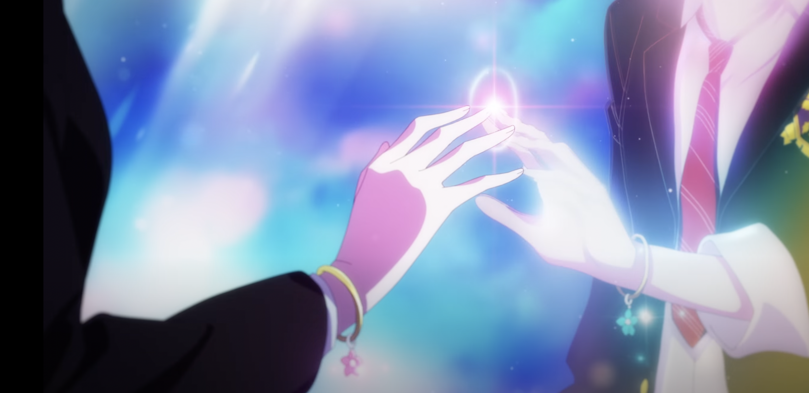

And I said, "I wanna take you to the sea"
And when I'm better, we'll do everything
I gotta stop making promises I can't keep


But if I was gone tomorrow, won't the waves crash on?
Is it selfish that I'm happy as we pass the setting sun?

Someday I'll be overcast, but you won't have to cry


'Cause we'll do the grieving while I'm by your side

I said
Don't try to make yourself remember, darling
Don't look for me, I'm just a story you've been told

So let's pretend a little longer
'Cause when we're gone
Everything goes on